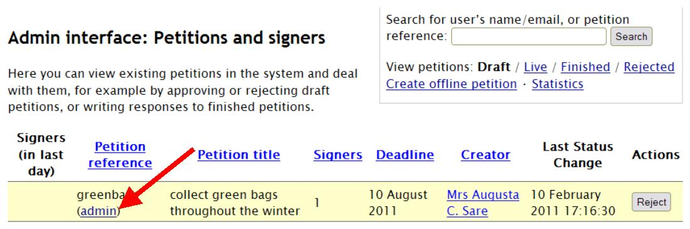
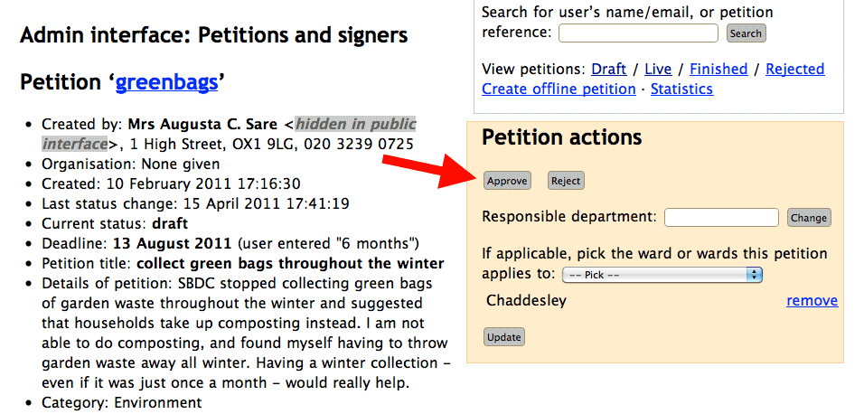
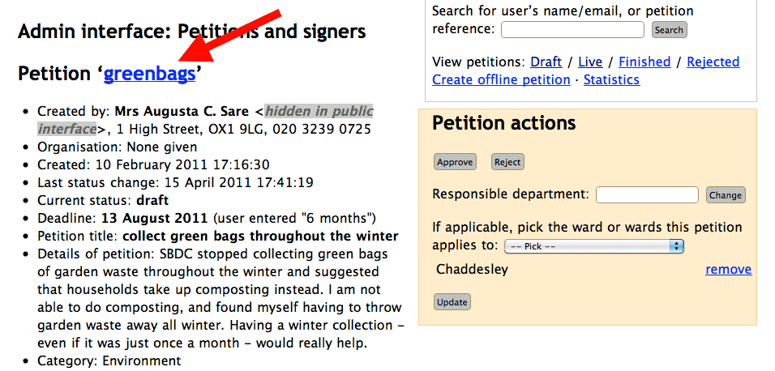

To approve a petition
When a petition creator clicks the confirmation link in their confirmation email, the petition moves into Draft status in the admin interface and an email is sent to the relevant administrator alerting them to the fact that there is a Draft petition waiting for approval/rejection.
In order to approve a petition, first ensure that you are in the Draft section of the admin interface; this is where the unapproved petitions are:

From this screen you cannot approve a petition, although you can reject it if it is obviously abusive. In order to see further information about the petition, and for the approval button, click on the ‘admin’ link, located under the petitions reference (short name) for that petition:
The ‘admin’ link takes you to the full details for that petition, as contained in the admin interface.
After reading the information given by the petition creator, if you decide that you wish to approve the petition, click the ‘Approve’ button.
This will leave a log under ‘Administrator events and notes’ on the admin page for that petition which states that Admin approved the petition.
Once a petition is approved an email is automatically sent to the petition creator alerting them to this. The petition changes to have ‘Live’ status (will be now be found under the Live section of the admin interface), and is also viewable on the public petitions webpage.
To view the public webpage for that petition from the admin interface, simply click the short name of the petition, and this will take you through to the public website:
